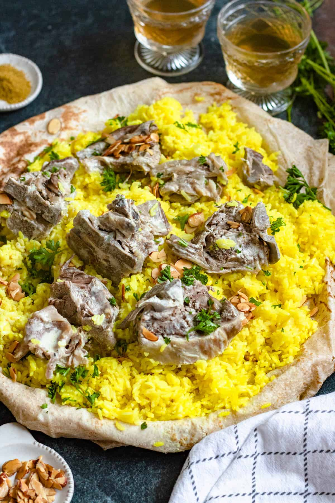

Mansaf Recipe

The best Mansaf recipe.
Ingredients
- Lamb
- Rice
- Cilantro
- Jameed
Steps:
- Slow cook meat
- Add beef, turn heat up and cook the beef, breaking it up as you go.
- Once the beef has all turned brown, add the remaining Ragu ingredients EXCEPT the sugar
- Stir then adjust the heat so it is bubbling very gently. Place the lid on and cook for 1.5 – 2 hours, stirring every now and then, then remove the lid and simmer for 30 minutes.
- The ragu is ready when the meat is really tender and the sauce has thickened and is rich – see video for consistency (Note 6). Adjust salt and pepper to taste, and add sugar if required